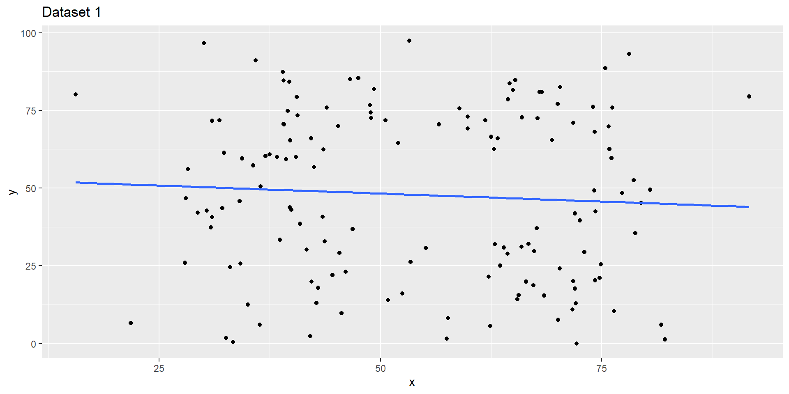
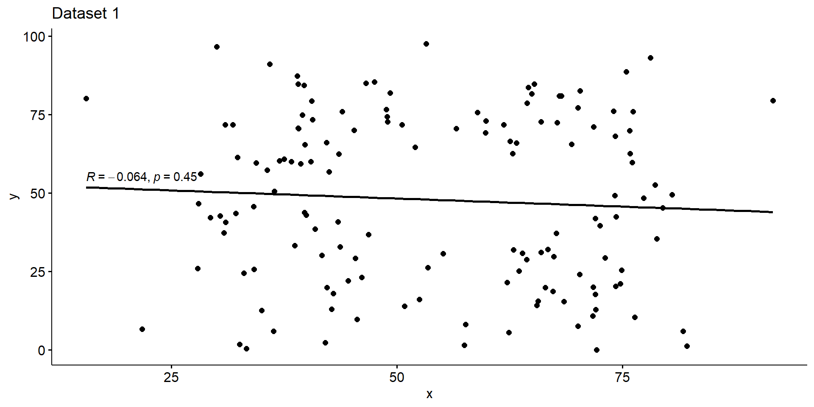

Correlation
PSYC 640 - Fall 2023
Last Class
- Two Way ANOVA
- Comparing means across multiple groups/levels
Looking Ahead
- R-Workshop! (Link to Sign up)
- 11/3 & 12/1 from 2-3pm
- Final Project Updates:
- Introduction & Methods draft due 11/15 (Peer Review)
- Data Analysis draft due 11/27 (Peer Review)
Today…
Linear Relationships - Correlation
Pearson Correlation
Spearman’s Rank Correlation
Missing Data
Creating correlation matrices
Relationships between variables (Ch 5.7)
Association - Correlation
Examine the relationship between two continuous variables
Similar to the mean and standard deviation, but it is between two variables
Typically displayed as a scatterplot
Association - Covariance
Before we talk about correlation, we need to take a look at covariance
\[ cov_{xy} = \frac{\sum(x-\bar{x})(y-\bar{y})}{N-1} \]
Covariance can be thought of as the “average cross product” between two variables
It captures the raw/unstandardized relationship between two variables
Covariance matrix is the basis for many statistical analyses
Covariance
Let’s take a look back at that data before and get the covariance
What does having a covariance of 7.3 actually mean though?
We have to interpret the covariance in terms of the units present (x = # of houses and y = amount of candy)
- The scale is \(x*y\) … what does that even mean?
Covariance to Correlation
The Pearson correlation coefficient \(r\) addresses this by standardizing the covariance
It is done in the same way that we would create a \(z-score\)…by dividing by the standard deviation
\[ r_{xy} = \frac{Cov(x,y)}{sd_x sd_y} \]
Correlations
Tells us: How much 2 variables are linearly related
Range: -1 to +1
Most common and basic effect size measure
Is used to build the regression model
Interpreting Correlations (5.7.5)
| Correlation | Strength | Direction |
|---|---|---|
| -1.0 to -0.9 | Very Strong | Negative |
| -0.9 to -0.7 | Strong | Negative |
| -0.7 to -0.4 | Moderate | Negative |
| -0.4 to -0.2 | Weak | Negative |
| -0.2 to 0 | Negligible | Negative |
| 0 to 0.2 | Negligible | Positive |
| 0.2 to 0.4 | Weak | Positive |
| 0.4 to 0.7 | Moderate | Positive |
| 0.7 to 0.9 | Strong | Positive |
| 0.9 to 1.0 | Very Strong | Positive |
Hypothesis Testing - Correlation
Statistical Test - Correlation
We tend to always compare our correlations to the null (0)
Hypotheses:
\(H_0: r_{xy} = 0\)
\(H_1:r_{xy} \neq 0\)
Assumptions:
Observations are independent
Linear Relationship
Statistical Test - Correlation
When comparing to 0, we can use the steps similar to a t-test
Calculate the test statistic (df = N - 2):
\[ t = \frac{r}{\sqrt{\frac{1-r^2}{N-2}}} \]
Then follow the typical steps for a t-test!
Statistical Test - But not always
It isn’t always that easy though…
We were able to use the \(t-distribution\) previously because we assumed the null was 0. However, we cannot do that when:
The null \(\neq\) 0
Calculating Confidence Intervals for correlations
Comparing two correlations against each other
Will need to transform the \(r\) to a \(z\) using Fisher’s r to z’ transformation (beyond this class)
\[ z' = \frac{1}{2}ln\frac{1+r}{1-r} \]
Pearson Correlations in R
Calculating Correlation in R
Now how do we get a correlation value in R?
That will give us the correlation, but we also want to know how to get our p-value
Correlation Test
To get the test of a single pair of variables, we will use the cor.test() function:
Using real data - NY & NM
So far we have been looking at single variables, but we often care about the relationships between multiple variables in a dataset
Code
| ageyears | sleep_hours_schoolnight | sleep_hours_non_schoolnight | reaction_time | score_in_memory_game | |
|---|---|---|---|---|---|
| ageyears | 1 | NA | NA | NA | NA |
| sleep_hours_schoolnight | NA | 1 | NA | NA | NA |
| sleep_hours_non_schoolnight | NA | NA | 1 | NA | NA |
| reaction_time | NA | NA | NA | 1 | NA |
| score_in_memory_game | NA | NA | NA | NA | 1 |
Missing Values
Handling Missing - Correlation
Listwise Deletion (complete cases)
- Removes participants completely if they are missing a value being compared
- Smaller Sample Sizes
- Doesn’t bias correlation estimate
Pairwise Deletion
- Removes participants for that single pair, but leaves information in when there are complete information
- Larger Sample Sizes
- Could bias estimates if there is a systematic reason things are missing
| ageyears | sleep_hours_schoolnight | sleep_hours_non_schoolnight | reaction_time | score_in_memory_game | |
|---|---|---|---|---|---|
| ageyears | 1.0000000 | -0.3771818 | 0.0259458 | 0.0582001 | -0.1140799 |
| sleep_hours_schoolnight | -0.3771818 | 1.0000000 | 0.0563271 | 0.0549937 | 0.0533009 |
| sleep_hours_non_schoolnight | 0.0259458 | 0.0563271 | 1.0000000 | -0.0908150 | 0.0726865 |
| reaction_time | 0.0582001 | 0.0549937 | -0.0908150 | 1.0000000 | -0.0069244 |
| score_in_memory_game | -0.1140799 | 0.0533009 | 0.0726865 | -0.0069244 | 1.0000000 |
| ageyears | sleep_hours_schoolnight | sleep_hours_non_schoolnight | reaction_time | score_in_memory_game | |
|---|---|---|---|---|---|
| ageyears | 1.0000000 | -0.3756825 | 0.0203699 | 0.0525420 | -0.0531333 |
| sleep_hours_schoolnight | -0.3756825 | 1.0000000 | 0.0593331 | 0.0548024 | 0.0532172 |
| sleep_hours_non_schoolnight | 0.0203699 | 0.0593331 | 1.0000000 | -0.0894077 | 0.0726865 |
| reaction_time | 0.0525420 | 0.0548024 | -0.0894077 | 1.0000000 | -0.0069010 |
| score_in_memory_game | -0.0531333 | 0.0532172 | 0.0726865 | -0.0069010 | 1.0000000 |
Spearman’s Rank Correaltion
Shortcomings of Pearson Correlation
Focus on linear relationships - how data fall on a single straight line
- We assume that with any increase in our X variable, there is an equal amount of increase in Y across the whole variable
- Example: relation between studying/effort and grade
- If you put 0 effort you would expect a 0 grade
- However, a little bit of effort might be related to a grade of 45
- But more effort will need to take place in order to go from 45 - 90 than it does to go from 0 - 45
Spearman’s Rank Correlation
We need to be able to capture this different (ordinal) “relationship”
- If student 1 works more hours than student 2, then we can guarantee that student 1 will get a better grade
Instead of using the amount given by the variables (“hours studied”), we rank the variables based on least (rank = 1) to most (rank = 10)
Then we correlate the rankings with one another
Foundations of Statistics
Who were those white dudes that started this?
Statistics and Eugenics
The concept of the correlation is primarily attributed to Sir Frances Galton
- He was also the founder of the concept of eugenics
The correlation coefficient was developed by his student, Karl Pearson, and adapted into the ANOVA framework by Sir Ronald Fisher
- Both were prominent advocates for the eugenics movement
What do we do with this info?
Never use the correlation or the later techniques developed on it? Of course not.
Acknowledge this history? Certainly.
Understand how the perspectives of Galton, Fisher, Pearson and others shaped our practices? We must! – these are not set in stone, nor are they necessarily the best way to move forward.
Be aware of the assumptions
Statistics are often thought of as being absent of bias…they are just numbers
Statistical significance was a way to avoid talking about nuance or degree.
“Correlation does not imply causation” was a refutation of work demonstrating associations between environment and poverty.
Need to be particularly mindful of our goals as scientists and how they can influence the way we interpret the findings
Fancy Tables
Correlation Tables
Before we used the cor() function to create a correlation matrix of our variables
But what is missing?
| ageyears | sleep_hours_schoolnight | sleep_hours_non_schoolnight | reaction_time | score_in_memory_game | |
|---|---|---|---|---|---|
| ageyears | 1.0000000 | -0.3771818 | 0.0259458 | 0.0582001 | -0.1140799 |
| sleep_hours_schoolnight | -0.3771818 | 1.0000000 | 0.0563271 | 0.0549937 | 0.0533009 |
| sleep_hours_non_schoolnight | 0.0259458 | 0.0563271 | 1.0000000 | -0.0908150 | 0.0726865 |
| reaction_time | 0.0582001 | 0.0549937 | -0.0908150 | 1.0000000 | -0.0069244 |
| score_in_memory_game | -0.1140799 | 0.0533009 | 0.0726865 | -0.0069244 | 1.0000000 |
Correlation Tables - sjPlot
| ageyears | sleep_hours_schoolnight | sleep_hours_non_schoolnight | reaction_time | score_in_memory_game | |
| ageyears | |||||
| sleep_hours_schoolnight | -0.377*** | ||||
| sleep_hours_non_schoolnight | 0.026 | 0.056 | |||
| reaction_time | 0.058 | 0.055 | -0.091 | ||
| score_in_memory_game | -0.114 | 0.053 | 0.073 | -0.007 | |
| Computed correlation used pearson-method with listwise-deletion. | |||||
Correlation Tables - sjPlot
So many different cusomizations for this type of plot
Can add titles, indicate what missingness and method
Saves you a TON of time when putting it into a manuscript
Visualizing Data
Visualizing Data
It is always important to visualize our data! Even after getting the correlations and other descriptives
Let’s go back to the data that we had in a previous lecture
Code
data1 <- import("https://raw.githubusercontent.com/dharaden/dharaden.github.io/main/data/data1.csv") %>%
mutate(dataset = "data1")
data2 <- import("https://raw.githubusercontent.com/dharaden/dharaden.github.io/main/data/data2.csv") %>%
mutate(dataset = "data2")
data3 <- import("https://raw.githubusercontent.com/dharaden/dharaden.github.io/main/data/data3.csv") %>%
mutate(dataset = "data3")And then combine them to make it easier
Descriptive Stats on the 3 datasets
three_data %>%
group_by(dataset) %>%
summarize(
mean_x = mean(x),
mean_y = mean(y),
std_x = sd(x),
std_y = sd(y),
cor_xy = cor(x,y)
)# A tibble: 3 × 6
dataset mean_x mean_y std_x std_y cor_xy
<chr> <dbl> <dbl> <dbl> <dbl> <dbl>
1 data1 54.3 47.8 16.8 26.9 -0.0641
2 data2 54.3 47.8 16.8 26.9 -0.0683
3 data3 54.3 47.8 16.8 26.9 -0.0645Visualizing Dataset 1

Visualizing Dataset 1
Visualizing Dataset 1
Visualizing Dataset 2
Let’s try it out in R!
Next time…
- More Correlation?
- Maybe Regression? (Y = mX + b)
- Group Work!